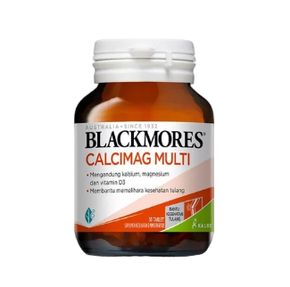
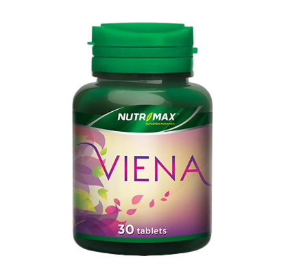
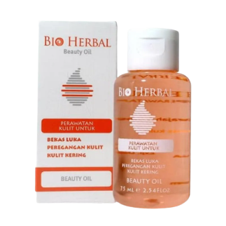
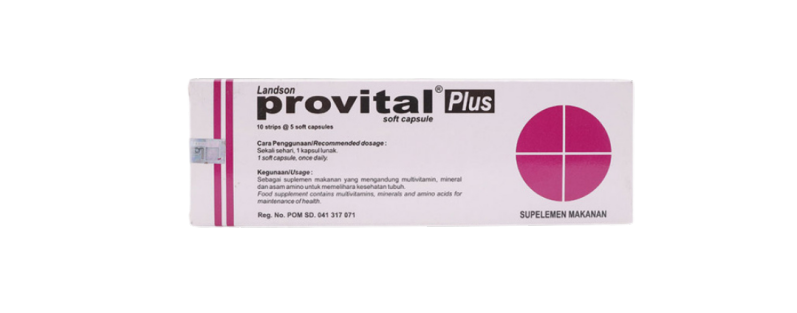

Profil

Toko Sehat Abadi adalah sebuah konsep usaha yang mengusung nilai-nilai kesehatan, kebugaran, dan kesejahteraan sebagai fokus utama. Konsep ini didedikasikan untuk menyediakan berbagai produk dan layanan yang mendukung gaya hidup sehat dan optimal bagi para pelanggan. Dengan berbagai produk seperti suplemen nutrisi, makanan organik, peralatan olahraga, produk perawatan diri alami,
dan lain sebagainya, Toko Sehat Abadi bertujuan untuk memfasilitasi individu dalam merawat kesehatan fisik dan mental mereka. Selain menyediakan produk-produk berkualitas tinggi, Toko Sehat Abadi juga berperan sebagai sumber informasi dan inspirasi bagi pelanggan dalam mengadopsi pola hidup sehat. Melalui pengetahuan dan panduan yang diberikan, toko ini membantu pelanggan untuk
mengambil keputusan yang bijak terkait makanan, olahraga, dan praktik sehat lainnya. Pentingnya memelihara kesehatan jangka panjang menjadi fokus utama Toko Sehat Abadi, yang berupaya membantu orang-orang mencapai kesejahteraan yang berkelanjutan dan abadi. Dengan memadukan produk berkualitas, layanan bermanfaat, dan pendekatan holistik terhadap kesehatan, toko ini menjadi destinasi
unggulan bagi mereka yang ingin menjalani gaya hidup sehat secara konsisten.
Produk
Dengan komitmen kami terhadap kesejahteraan pelanggan, Toko Obat Sehat Abadi menyediakan pilihan produk yang luas, mulai dari suplemen nutrisi, vitamin, herbal alami, obat-obatan resep, hingga perawatan kesehatan kulit dan produk perawatan tubuh. Tim ahli kami yang berpengalaman selalu siap memberikan panduan dan nasihat terbaik
untuk memastikan Anda mendapatkan produk yang sesuai dengan kebutuhan dan tujuan kesehatan Anda.
Kualitas adalah prioritas utama kami. Kami hanya menyediakan produk dari merek-merek terkemuka yang telah terbukti secara klinis dan diakui dalam industri kesehatan. Ketersediaan produk-produk berkualitas ini di Toko Obat Sehat Abadi membantu memastikan bahwa Anda selalu mendapatkan solusi kesehatan yang andal dan efektif.
Jenis Produk
Toko Obat Sehat Abadi menawarkan beragam jenis produk yang dirancang khusus untuk memenuhi kebutuhan kesehatan dan kesejahteraan Anda. Dengan fokus pada kualitas, keamanan, dan hasil yang efektif, kami menghadirkan berbagai pilihan produk, termasuk :

Suplemen Nutrisi, Kami menyediakan berbagai macam suplemen nutrisi yang dirancang untuk memberikan dukungan tambahan bagi tubuh Anda. Mulai dari vitamin, mineral, asam lemak omega-3, hingga probiotik, kami memastikan Anda memiliki akses ke nutrisi penting yang mungkin sulit diperoleh dari makanan sehari-hari.
Obat Herbal Alami, Produk herbal alami menjadi pilihan bagi mereka yang mencari pendekatan alternatif dalam menjaga kesehatan. Kami menyediakan berbagai macam ramuan herbal yang telah dikenal karena manfaat kesehatannya, seperti echinacea, ginseng, dan berbagai ramuan tradisional lainnya.

Produk Kesehatan Kulit, Kesehatan kulit merupakan bagian penting dari kesejahteraan keseluruhan. Kami menyediakan produk perawatan kulit yang berkualitas tinggi, termasuk krim, losion, pembersih wajah, dan produk perawatan kulit lainnya yang membantu menjaga kulit tetap sehat dan bersinar.

Produk Perawatan Tubuh, Kesejahteraan melibatkan tidak hanya kesehatan fisik, tetapi juga perawatan tubuh yang tepat. Kami menawarkan produk-produk seperti shampoo, sabun mandi, dan produk perawatan tubuh lainnya yang dirancang untuk menjaga kebersihan dan kesehatan kulit Anda.
Alat Kesehatan, Untuk membantu pemantauan kesehatan pribadi Anda, kami menyediakan berbagai alat kesehatan, seperti tensi meter, termometer, alat pengukur gula darah, dan perangkat medis lainnya yang memungkinkan Anda memantau kondisi kesehatan Anda dengan mudah.
Produk Unggulan

Toko Sehat Abadi dengan bangga mempersembahkan salah satu produk andalannya yang mencerminkan komitmen kami terhadap kesejahteraan dan kebugaran holistik: "Energi Vital Nutrisi Plus."
"Energi Vital Nutrisi Plus" adalah suplemen nutrisi canggih yang dirancang secara khusus untuk memberikan dukungan terbaik bagi tubuh Anda dalam menghadapi tantangan sehari-hari. Diramu dengan kombinasi teliti antara bahan alami berkualitas tinggi dan ilmu nutrisi terkini, produk ini menjadi solusi sempurna untuk meningkatkan vitalitas, menjaga keseimbangan, dan meningkatkan performa Anda.
Setiap kapsul "Energi Vital Nutrisi Plus" mengandung campuran esensial vitamin, mineral, antioksidan, dan zat-zat penting lainnya yang berperan dalam menjaga fungsi sistem kekebalan tubuh, memperkuat energi fisik, serta mendukung kesehatan otak dan kardiovaskular. Formulanya yang berfokus pada nutrisi holistik membantu mendukung tubuh Anda dari dalam, memberikan energi yang berkelanjutan, serta meningkatkan daya tahan fisik dan mental.
Dalam rangkaian misi kami untuk mengutamakan kualitas, "Energi Vital Nutrisi Plus" diproduksi dengan standar yang ketat, menggunakan bahan-bahan alami tanpa tambahan bahan kimia berbahaya. Kehadiran produk ini dalam perjalanan Anda menuju kesejahteraan mencerminkan komitmen Toko Sehat Abadi dalam menyediakan produk yang memenuhi standar tertinggi.
Segera pilih "Energi Vital Nutrisi Plus" dari Toko Sehat Abadi dan mulailah hari-hari Anda dengan semangat dan vitalitas yang tak terbatas. Perkuat diri Anda menuju kehidupan yang lebih sehat dan bugar dengan produk unggulan kami.